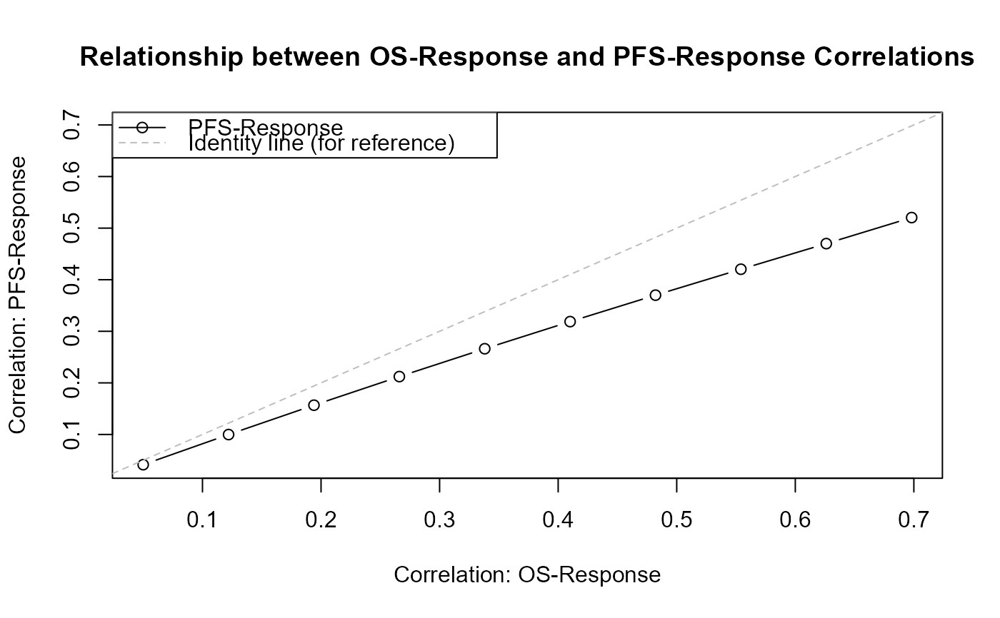
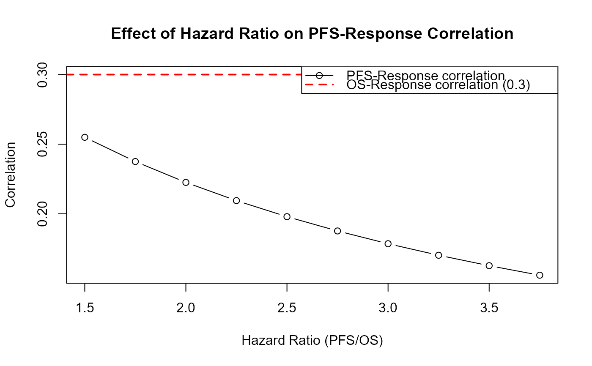

Calculate Correlation Between Response and PFS in OS-PFS-Response Framework
Source:R/CorResponsePFS.R
CorResponsePFS.RdCalculates the correlation coefficient between a binary response endpoint and progression-free survival (PFS) in the specific context where all three endpoints (OS, PFS, Response) are modeled together using the Fleischer model and copula-based dependence. Given a user-specified correlation between OS and Response, this function predicts the resulting correlation between PFS and Response.
Arguments
- p
Numeric. The true probability of the binary response endpoint. Must be between 0 and 1 (exclusive).
- hazard_OS
Numeric. The hazard rate for overall survival (OS). Must be positive.
- hazard_PFS
Numeric. The hazard rate for progression-free survival (PFS). Must be positive and strictly greater than hazard_OS to ensure PFS <= OS.
- rho_OS_Response
Numeric. The desired correlation coefficient between OS and Response. Must be within the feasible range determined by Fréchet-Hoeffding bounds for the given p.
- copula
Character. The copula family to use for modeling the dependence between OS and Response. Options are "Clayton" or "Frank".
Details
This function is designed for the specific setting where:
OS ~ Exp(hazard_OS)
TTP (time to progression) ~ Exp(hazard_TTP) where hazard_TTP = hazard_PFS - hazard_OS
PFS = min(OS, TTP) ~ Exp(hazard_PFS) (Fleischer model)
Response is correlated with OS via the specified copula with correlation rho_OS_Response
The calculation proceeds in three steps:
Calculate the copula parameter theta from the specified rho_OS_Response using
CopulaParamResponseTTEDefine the first partial derivative of the copula function cy(u, v; theta)
Calculate Corr(PFS, Response) using the formula: $$\text{Corr}(PFS, Response) = \sqrt{\frac{1-p}{p}} \frac{1}{\lambda_{TTP}} \left[\frac{\lambda_{PFS}}{1-p} \int_0^1 c_y(u, 1-p; \theta) (1-u)^{\lambda_{TTP}/\lambda_{OS}} du - \lambda_{OS}\right]$$
where \(\lambda_{TTP} = \lambda_{PFS} - \lambda_{OS}\) and \(c_y(u, v; \theta) = \frac{\partial C(u, v; \theta)}{\partial u}\) is the first partial derivative of the copula function.
Key insight: When generating OS + PFS + Response simultaneously, users only specify the correlation between OS and Response. The correlation between PFS and Response is automatically determined by the model structure. This function calculates what that resulting correlation will be.
Note
Practical usage:
In
rOncoEndpoints, when all three endpoints are generated, users specify rho_tte_resp which represents the correlation between OS and ResponseThe correlation between PFS and Response is not specified but emerges from the model structure
This function predicts what the PFS-Response correlation will be, which is useful for: - Trial design and planning - Understanding the correlation structure among all three endpoints - Sensitivity analyses - Power calculations involving PFS
Copula families:
Clayton copula: Exhibits lower tail dependence, cannot model negative dependence
Frank copula: Flexible for both positive and negative dependence with symmetric tail behavior
Numerical considerations:
The function uses numerical integration which may be less accurate for extreme parameter combinations (e.g., very large hazard ratios)
Warnings are issued when hazard ratios are extreme or when integration encounters difficulties
References
Fleischer, F., Gaschler-Markefski, B., & Bluhmki, E. (2009). A statistical model for the dependence between progression-free survival and overall survival. Statistics in Medicine, 28(21), 2669-2686.
Trivedi, P. K., & Zimmer, D. M. (2005). Copula modeling: an introduction for practitioners. Foundations and Trends in Econometrics, 1(1), 1-111.
See also
CopulaParamResponseTTE for computing copula parameters,
CorBoundResponseTTE for general TTE-Response correlation bounds,
CorBoundResponsePFS for theoretical bounds of PFS-Response correlation,
rOncoEndpoints for generating correlated oncology endpoints
Examples
# Example 1: Calculate PFS-Response correlation given OS-Response correlation
# Median OS = 30 months, Median PFS = 18 months
# Response rate = 40%, OS-Response correlation = 0.3
rho_pfs_resp <- CorResponsePFS(
p = 0.4,
hazard_OS = log(2) / 30,
hazard_PFS = log(2) / 18,
rho_OS_Response = 0.3,
copula = "Clayton"
)
cat("PFS-Response correlation:", rho_pfs_resp, "\n")
#> PFS-Response correlation: 0.2378192
# Example 2: Compare correlations for different copulas
p <- 0.5
hazard_OS <- 0.04
hazard_PFS <- 0.08
rho_OS <- 0.25
rho_pfs_clayton <- CorResponsePFS(p, hazard_OS, hazard_PFS, rho_OS, "Clayton")
rho_pfs_frank <- CorResponsePFS(p, hazard_OS, hazard_PFS, rho_OS, "Frank")
cat("Clayton copula - PFS-Response correlation:", rho_pfs_clayton, "\n")
#> Clayton copula - PFS-Response correlation: 0.1869128
cat("Frank copula - PFS-Response correlation:", rho_pfs_frank, "\n")
#> Frank copula - PFS-Response correlation: 0.1676352
# Example 3: Sensitivity analysis - how does PFS-Response correlation
# change with different OS-Response correlations?
p <- 0.4
hazard_OS <- log(2) / 30
hazard_PFS <- log(2) / 18
# Calculate feasible range for OS-Response correlation
rho_bounds <- CorBoundResponseTTE(p = p)
# For Clayton copula: use only positive correlations
rho_OS_seq <- seq(0.05, rho_bounds[2] - 0.05, length.out = 10)
# Calculate corresponding PFS-Response correlations
rho_PFS_seq <- sapply(rho_OS_seq, function(rho) {
CorResponsePFS(p, hazard_OS, hazard_PFS, rho, copula = "Clayton")
})
# Plot the relationship
plot(rho_OS_seq, rho_PFS_seq, type = "b",
xlab = "Correlation: OS-Response",
ylab = "Correlation: PFS-Response",
main = "Relationship between OS-Response and PFS-Response Correlations",
ylim = range(c(rho_OS_seq, rho_PFS_seq)))
abline(a = 0, b = 1, lty = 2, col = "gray") # Identity line
legend("topleft",
legend = c("PFS-Response", "Identity line (for reference)"),
lty = c(1, 2), col = c("black", "gray"), pch = c(1, NA))

# Example 4: Effect of hazard ratio on PFS-Response correlation
# Fix OS-Response correlation, vary PFS hazard
p <- 0.5
hazard_OS <- 0.04
rho_OS <- 0.3
hazard_PFS_vec <- seq(0.06, 0.15, by = 0.01)
rho_PFS_vec <- sapply(hazard_PFS_vec, function(h_pfs) {
CorResponsePFS(p, hazard_OS, h_pfs, rho_OS, copula = "Clayton")
})
# Plot
hazard_ratio <- hazard_PFS_vec / hazard_OS
plot(hazard_ratio, rho_PFS_vec, type = "b",
xlab = "Hazard Ratio (PFS/OS)",
ylab = "Correlation",
main = "Effect of Hazard Ratio on PFS-Response Correlation",
ylim = range(c(rho_PFS_vec, rho_OS)))
abline(h = rho_OS, lty = 2, col = "red", lwd = 2)
legend("topright",
legend = c("PFS-Response correlation",
paste0("OS-Response correlation (", rho_OS, ")")),
lty = c(1, 2), col = c("black", "red"), pch = c(1, NA), lwd = c(1, 2))

# Example 5: Verify calculated correlation matches simulation
if (FALSE) { # \dontrun{
set.seed(123)
p <- 0.4
hazard_OS <- 0.05
hazard_PFS <- 0.08
rho_OS_Response <- 0.3
# Predict PFS-Response correlation
predicted_rho <- CorResponsePFS(
p, hazard_OS, hazard_PFS, rho_OS_Response, copula = "Clayton"
)
# Generate data and calculate empirical correlation
data <- rOncoEndpoints(
nsim = 1000,
n = 500,
p = p,
hazard_OS = hazard_OS,
hazard_PFS = hazard_PFS,
rho_tte_resp = rho_OS_Response,
copula = "Clayton"
)
empirical_rho <- cor(data$PFS, data$Response)
cat("Predicted PFS-Response correlation:", predicted_rho, "\n")
cat("Empirical PFS-Response correlation:", empirical_rho, "\n")
cat("Difference:", abs(predicted_rho - empirical_rho), "\n")
} # }